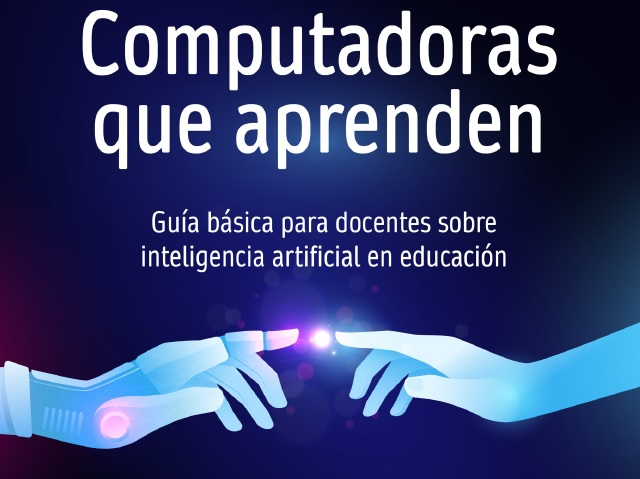

Inteligencia Artificial¶
Curso de Inteligencia Artificial¶
Curso online gratuito Elementos de IA.
Libro Computadoras que aprenden¶
El mundo de la inteligencia artificial ha generado una gran cantidad de debates y opiniones entre expertos y personalidades influyentes, ya en el 2014, Stephen Hawking, uno de los científicos más renombrados de nuestro tiempo, advirtió sobre los peligros potenciales de la IA y su capacidad para superar a la humanidad. Más cerca en el tiempo, Elon Musk, innovador empresario, ha abogado por un enfoque responsable y ético en el desarrollo de la IA, argumentando que puede ser una herramienta valiosa para resolver problemas de nuestro mundo pero siempre bajo una estricta regulación.
Ambos puntos de vista son importantes a la hora de comprender los desafíos y oportunidades que ofrece esta tecnología, sobre todo cuando es aplicada a la educación.
Es por eso lo valioso que representa este libro escrito por Diego Craig, un profesional con una sólida formación y amplia experiencia en el campo de la tecnología educativa, quién pretende introducir al lector en los conceptos claves de la inteligencia artificial y su aplicación en el ámbito educativo.
Se abordan temas como el impacto de ChatGPT, explorando las opiniones y debates que rodean su uso; cuestiones éticas, privacidad, definiciones, su uso para el diálogo y se examinan aplicaciones prácticas en una variedad de contextos.
Diego Craig brinda una introducción a los conceptos clave de la IA y su aplicación en la educación, abordando tanto los aspectos positivos como los potenciales desafíos y riesgos.
Libro Computadoras que aprenden, de Diego F. Craig. Formato PDF.
Vídeos de DotCSV¶
Vídeos de Jaime Altozano¶
Vídeos TED¶
Vídeos de Veritasium¶
Computadoras e Inteligencia Artificial.